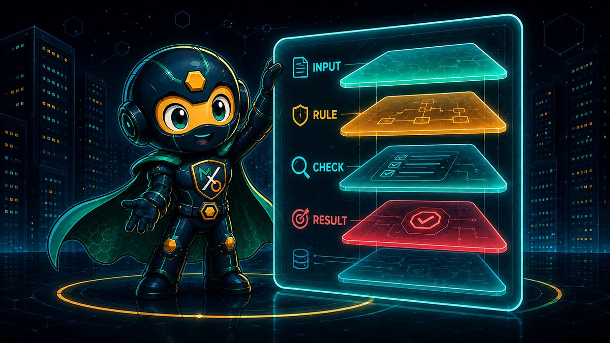
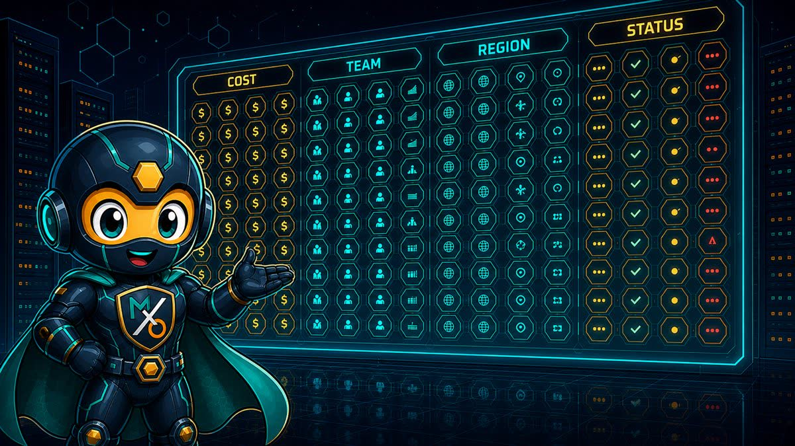

THE
CHECKS
A hundred and three questions asked of your account — what each finding tells you, how to quiet the ones that don't apply, and how to be sure nothing changes without your say-so.

A CHECK IS
A QUESTION
Not a score, not a grade. One plain question asked of every matching resource — "is this volume attached to anything?" — and a list of the ones where the answer looks expensive.
Each check covers exactly one kind of waste. That's deliberate: a single "cloud health score" tells you nothing you can act on, while "eleven volumes are unattached, costing $340 a month" is a task someone can pick up this afternoon.
Can a check change something in my account while it's looking?
No. Checks only read and report — every one of them, without exception. Changing anything is a separate, deliberate step with its own switches, and you'll meet those on page 8.

A HUNDRED AND
THREE
Where the weight sits:
Notice the biggest pile isn't compute — it's storage. Nobody gets paged about a bucket with no lifecycle policy, so that waste sits there for years. Twelve of my questions are about S3 alone.
The full list lives under Settings → Checks, grouped by service, with a short description of what each one looks for.
READING A
FINDING
A resource id and a dollar figure is a rumour. A finding has to say what I saw, what I suggest, what else you might do instead, and how sure I am.
Set the threshold to 0 to switch the grace period off and see everything.
WHY IT WAITS
BEFORE ASKING
I detached a volume an hour ago during maintenance and MaxOps didn't flag it. Is it broken?
That's me being polite. Several checks wait before they'll call something waste — unattached volumes, stopped instances, unused file systems. You're mid-migration; I'm not going to suggest deleting your work in progress.
Each of those checks has a minimum age you can set. The default is a week for storage and a month for stopped instances — long enough to cover a maintenance window, short enough that genuine waste still surfaces quickly.
One thing worth knowing: if I can't work out how old something is, I don't report it. These recommendations end in deletion, so "couldn't tell" must never be read as "old enough."
The recommendation still stands — MaxOps just won't do this one for you.
WHY SOME FINDINGS
HAVE NO BUTTON
This one recommends reducing shard count, but there's nothing to click.
Because I know it's wasteful, and I also know I shouldn't be the one to fix it. Roughly a quarter of my checks are marked review on purpose — the right move is a person who understands the workload.
Every finding carries a recommendation. Only some carry an action MaxOps can perform. Where no safe automated remedy exists, you get the analysis and the evidence and make the change yourself — which is better than a button that does something plausible and wrong.
As the action library grows, findings that are advice today gain buttons. The recommendation doesn't change; only who carries it out.
A check you've never touched is on. Only an explicit "off" silences it.
TURNING A CHECK
OFF
Some questions simply don't apply to you. If you have no compliance reason to keep cross-region replication, that check is noise on every bucket, forever. Turn the question off — not each answer.
A disabled check is skipped before the scan starts, so it costs nothing and produces nothing. Settings → Checks shows how many you've customised, so it's easy to see what you've changed from the defaults.
A new check appeared after I upgraded. Was that supposed to happen?
Yes. Anything you've never expressed an opinion about runs by default — there's a difference between "you haven't decided" and "you said no", and only the second one should keep me quiet. New checks arrive switched on.
THE MASTER
SWITCH
Out of the box I change nothing. Every action is held shut until someone deliberately opens the gate — and that gate isn't in the app.
MAXOPS_ENABLE_ACTIONS=true is set where MaxOps runs, no action runs at all. Settings will tell you plainly that actions are disabled for the environment.The order is the point. The master gate lives in the environment, not in the database, so nobody with access to the interface can turn on changes the deployment forbade. Getting write access requires someone who can change how MaxOps is run.
Which means you can hand me to a whole team read-only with a straight face. All the findings, all the savings, all the evidence — and not one thing I can alter.
SNOOZE
OR EXEMPT?
Exempt means this is legitimate and always will be — a volume kept deliberately for forensics. Snooze means not now: ask me again after the migration lands. One is a decision, the other is a deferral, and blurring them is how a temporary exception quietly becomes permanent.
Both are set on a single resource for a single check. Silencing a volume for the unattached question doesn't silence it for anything else — the exception stays as narrow as the question it answers.
It asks me for a reason. Do I have to fill that in?
Not required, but write it anyway. It's for whoever finds this in six months and wonders why a $400-a-month volume was invisible. That person is usually you.
WHO SILENCED
WHAT
Every snooze and every exemption is written down, and the record is never edited afterwards. Not just what's true now — what changed, and who changed it.
Each entry keeps the resource, the account and region, the date the snooze ran to before and after the change, the reason before and after, who did it, and when. Keeping both sides is what turns a settings screen into a history you can actually investigate.
Isn't that a lot of bookkeeping for hiding a row in a dashboard?
Hiding a row in a dashboard is precisely how six figures of waste survives an audit. If someone quietly extended the same snooze four times, that should be a discoverable fact — not a mystery you re-litigate every quarter.
A SCAN, END TO END
Every control you've met gets one say, in this order.
QUICK REFERENCE
| Term | Where you see it | What it means |
|---|---|---|
| Check | Settings › Checks | One question asked of your account. 112 of them, across 32 resource types. |
| Finding | Dashboard | One resource that answered a check badly, with cost, reason and options. |
| Recommendation | on a finding | The suggested fix. Always present, even when MaxOps can't perform it. |
| Action | on a finding | A change MaxOps can make for you. Only some recommendations have one. |
| Review | on a finding | Deliberately no automated fix — this one needs a person. |
| Minimum age | check settings | How long a resource must have been idle before it's reported. 0 disables it. |
| Snooze | on a resource | Hide this finding until a date you choose, with a reason. |
| Exempt | on a resource | Permanently accept this one. It stops being reported for that check. |
| Checks tuned | Settings | How many checks you've changed from their defaults. |
| Actions disabled | Settings › Actions | Read-only mode. Nothing can be changed until the deployment allows it. |
A CHECK ASKS.
ONLY YOU
ANSWER.
A hundred and three questions, a grace period before each one is asked in earnest, a narrow way to say "not this one", and a record of every time somebody did.